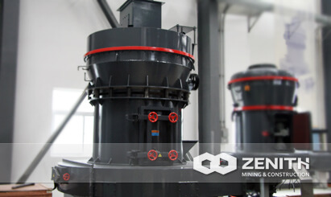
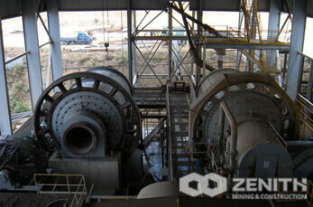

-

Ball Mill For Gold
Ball mill is the most widely used kind of grinding equipment. Zenith Ball mills are widely used in various types of ores' benefication.
-
MTW Trapezium Mill
MTW Series trapezium mill is the latest grinding mill, which is developed by our company's experts based on 10 years' R&D on grinding machine.
- 
MTM Trapezium Mill
Zenith MTM Series Trapezium Mill is the world leading industrial mill. It is designed by our own engineers and technical workers based on many years.
-
XZM Ultrafine Mill
Zenith XZM Series Ultrafine Mill is widely used for micron powder producing. The output size can reach 2500mesh (5um). It is suitable to grind the material.
-
MTM130X Strengthened Ultrafine Mill
Based on many years research, our mill experts designed MTM130X Series strengthened Ultra fine mill on the basis of our original patented product.
-
Vertical Roller Mill Operaton
Base on ZENITH abundant experience in producing vertical grinding mill and the latest technology from Taiwan &Germany, Zenith developed the LUM.
-

Micro Grinding Mill
The micro grinding mill is possible to produce 30-80 mesh coarse powder through special device in the machine.
-
LM Vertical Grinding Mill
LM series vertical milling machine, which is developed and launched by Zenith, sets medium crushing, drying, grinding, classifying and other functions.
-
Hammer Mill
The hammer mill (also called HM series coarse powder mill) is one kind of new high efficient grinding machine. This mill is mainly used for coarse pow.
-
Rod Mill
Rod mills are very similar to ball mills, except they use long rods for grinding media. The rods grind the ore by tumbling within the the mill.
- 
Cement Mill
A cement mill is the equipment that used to grind the hard, nodular clinker from the cement kiln into the fine grey powder that is cement. Most cement.
-
Raw Mill
Raw mill is mainly used in grinding raw materials and end products in cement plant. It is also suitable for various ores and other materials metallurg.
-
Coal Mill
Coal mill is an important auxiliary equipment for coal-powder furnace, it has three methods to crush the coal lump and grind them into powder,it is.